Communication, leadership and visual storytelling
News Department Leadership & Photography
I previously served as a news department lead and I also keep photography as a serious personal practice. This page records the part of my profile that is easy to miss in a technical resume: leading people, documenting activities, supporting volunteer/service events and making visual work that can communicate atmosphere, people and story.
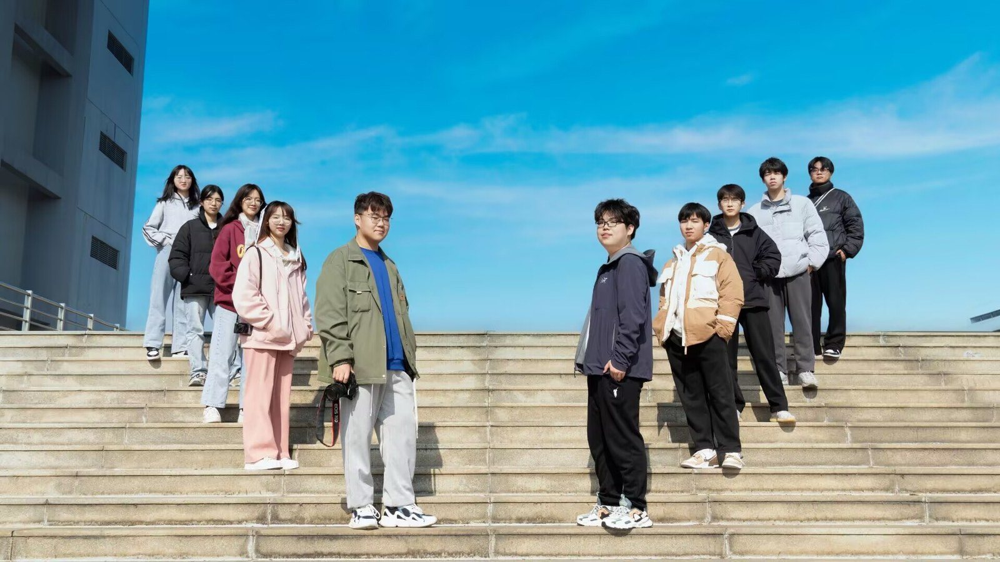
What This Adds to Engineering
- Leadership habit: planning, coordinating and taking responsibility for visible output.
- Communication ability: turning activity into clear public-facing material, not only internal notes.
- People sense: working with classmates, volunteers, event participants and small creative teams.
- Visual judgement: composition, lighting, timing and selecting images that tell a story.
- Confidence in documentation: useful for field reports, commissioning evidence, project updates and stakeholder communication.
Leadership and Team Evidence
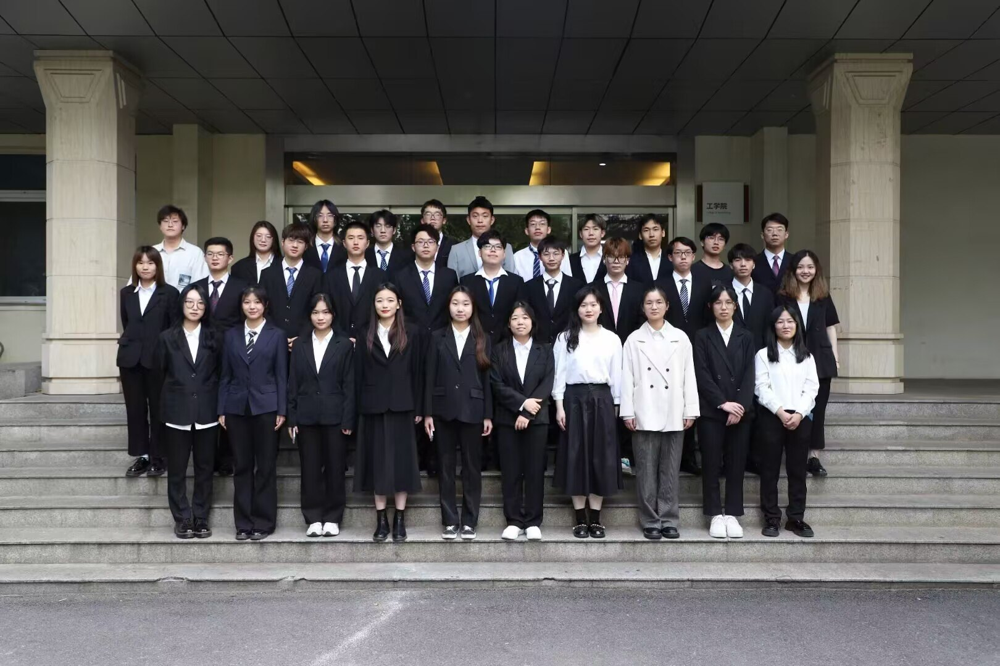
Photography Gallery
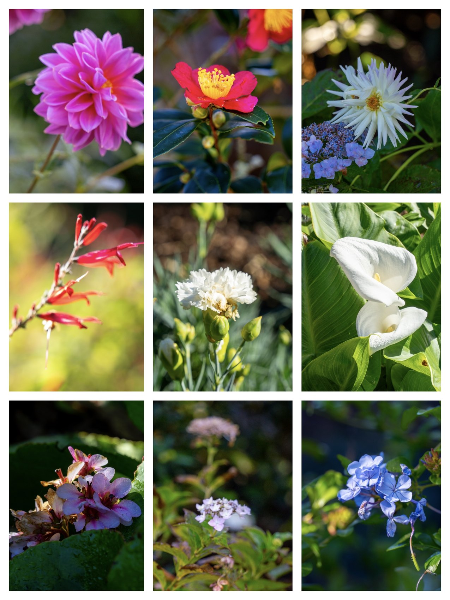
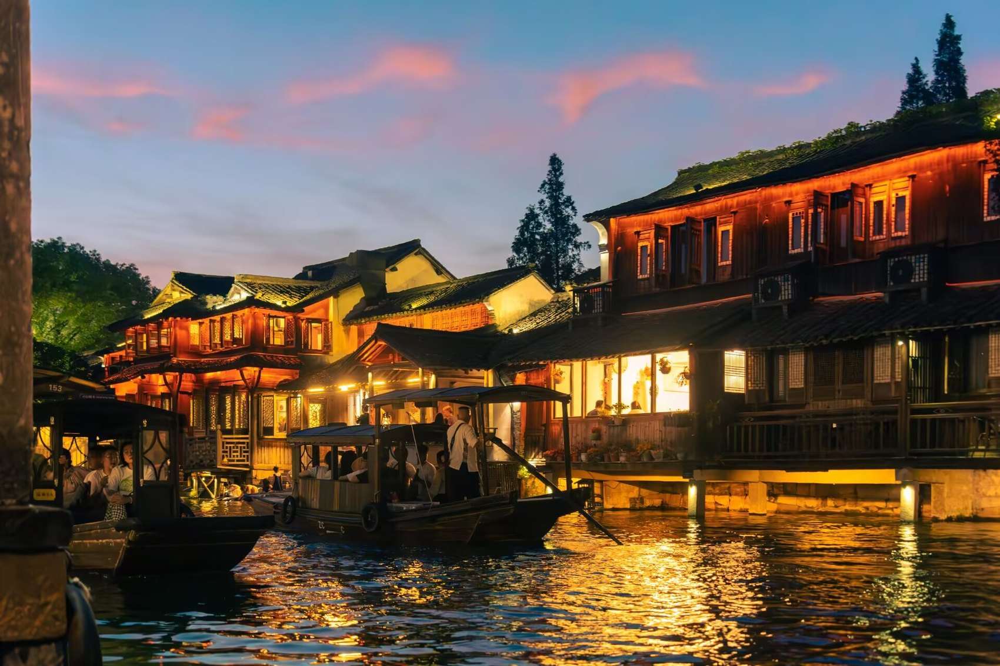
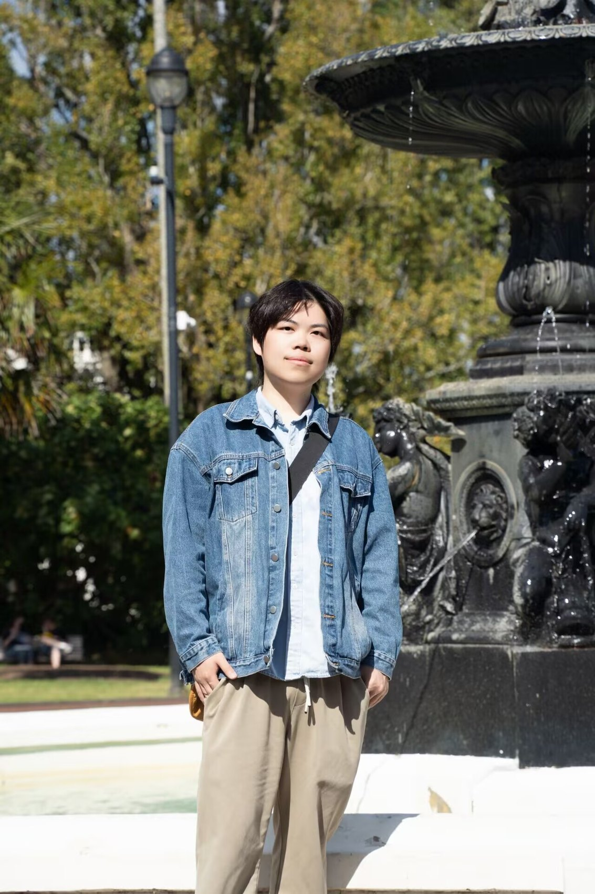
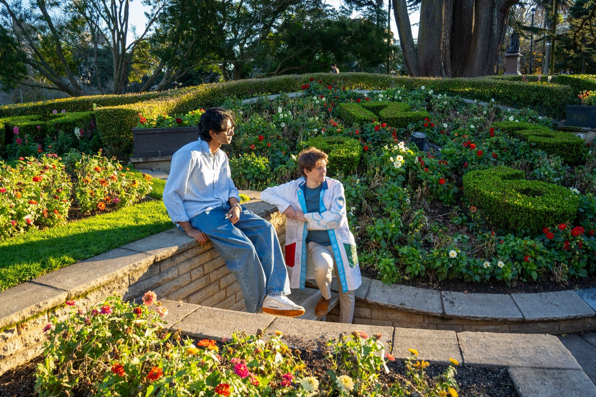
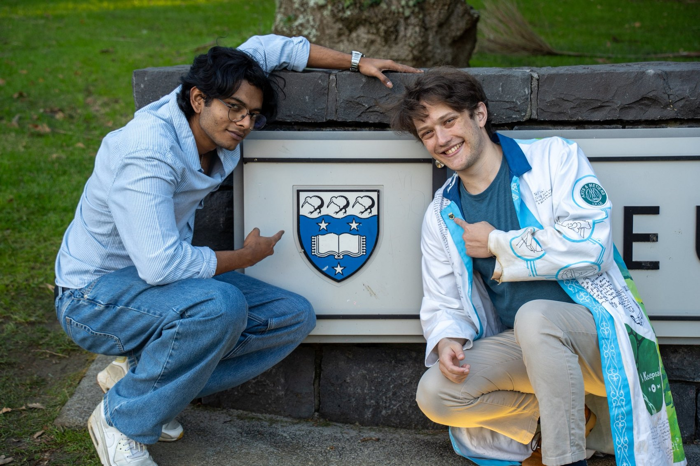
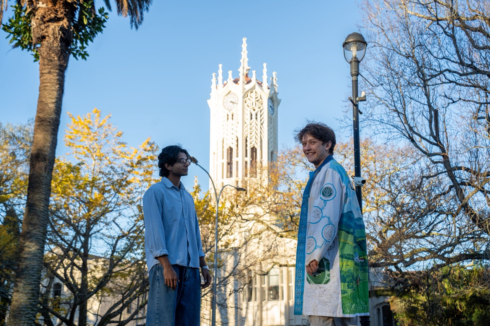
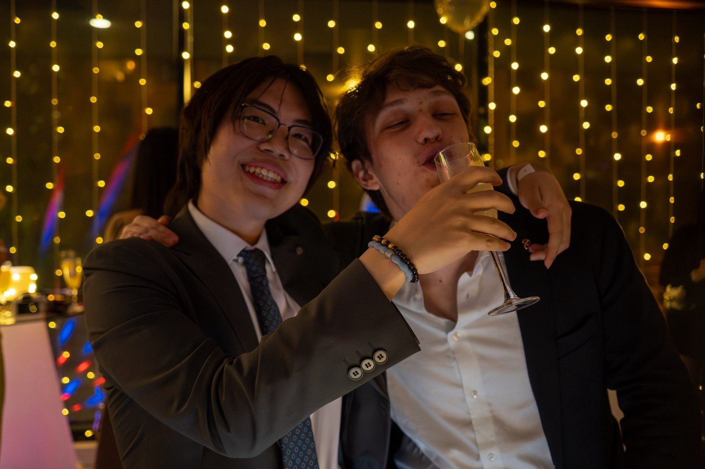
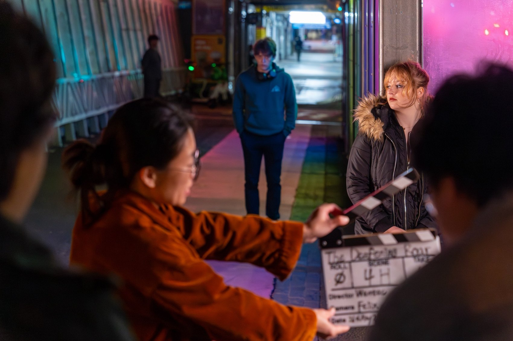
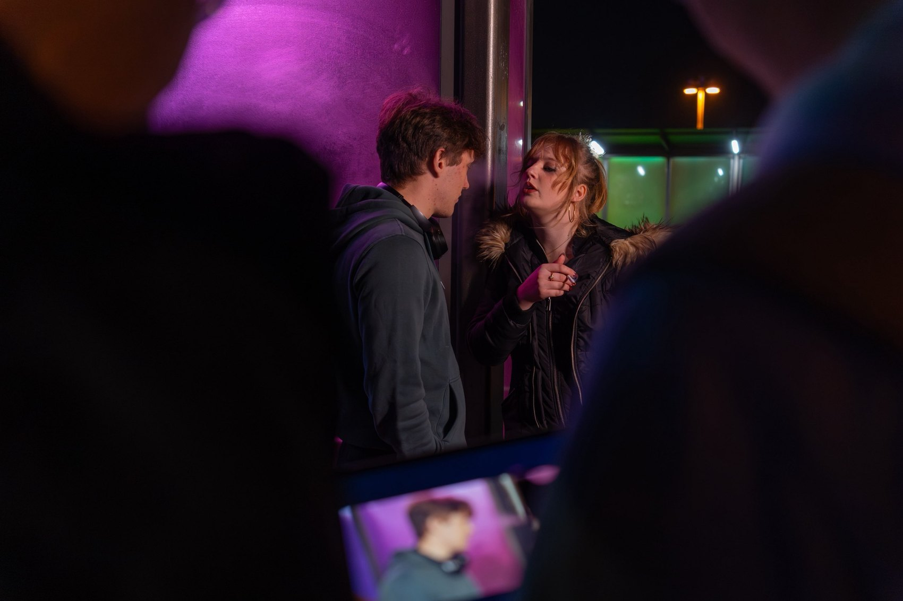
Why I Include This in an Engineering Portfolio
Many engineering roles need people who can lead a small group, explain a system, document evidence and make a project understandable to non-specialists. My media and photography background helps me do that with more confidence and a more human sense of communication.